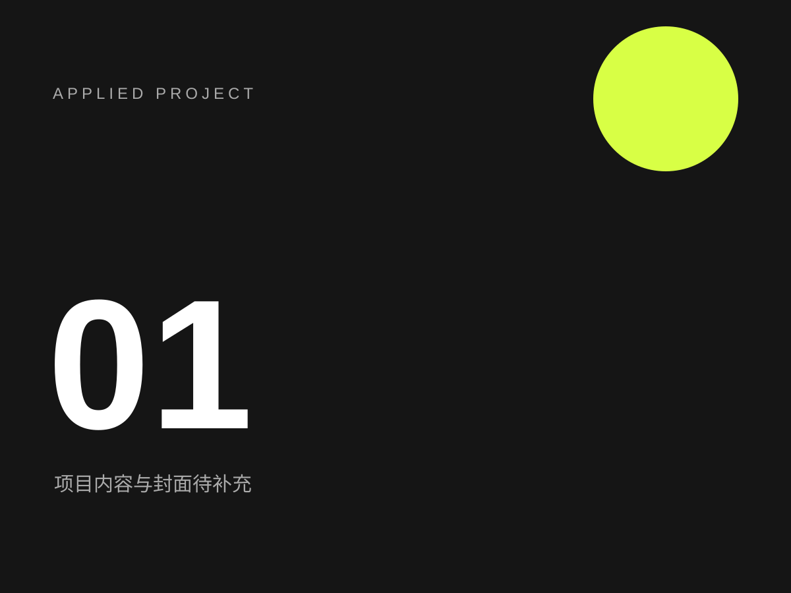

本地作品管理 / LOCAL PUBLISHER
新增或替换作品卡片
选择主站文件夹后，可填写卡片资料、替换封面，并同时更新作品资料与详情页接口。封面会统一转换为 WebP，并使用项目 ID 作为稳定文件名。
建议使用最新版 Chrome 或 Edge。第一次保存时，浏览器会要求你选择并授权网站根目录。
01. 项目资料
02. 主站封面与预览
将一张主站卡片封面拖到这里
详情素材请放入独立详情页的 assets 文件夹
详情素材请放入独立详情页的 assets 文件夹
尚未选择文件
封面固定路径：uploads/works-covers/项目-id.webp

03. 保存
“保存到网站”会更新 data/works.js、data/work-detail-links.js 与固定封面。详情素材仍只放在对应详情页。
等待填写项目资料。